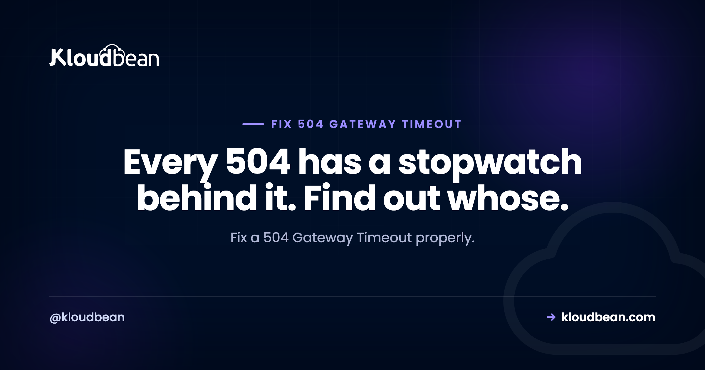

504 Gateway Timeout: What Timed Out, and Which Timeout to Change

A 504 Gateway Timeout means one component was waiting on another, ran out of patience, and gave up. That is genuinely all it means. What makes it frustrating is that a typical request passes through several components that each keep their own clock, and the error page never tells you which one stopped counting. So the first job is not fixing anything. It is working out who timed out, because the answer determines whether you have a slow query, a stuck worker, or a limit set too low three layers away from the actual problem.
Find which layer gave up by reading your web server error log, where nginx records upstream timed out along with the upstream address. Then fix the slow work rather than the timeout: look for unindexed queries, external API calls without their own timeout, and long-running tasks running inside a web request. Raising proxy_read_timeout or fastcgi_read_timeout is appropriate only when the work is genuinely long and cannot be moved, and even then it should be a deliberate exception rather than a first response.
Who is actually timing out?
A request to a typical PHP or Node application passes through a chain of components. Each has a timeout, and the shortest one wins:
| Layer | Setting | Common default | Symptom when it fires |
|---|---|---|---|
| CDN or proxy in front | Provider setting | Around 100 seconds | 504 or a provider-specific code such as 524 |
| nginx to app | proxy_read_timeout | 60 seconds | upstream timed out in the error log |
| nginx to PHP-FPM | fastcgi_read_timeout | 60 seconds | upstream timed out against a socket |
| PHP itself | max_execution_time | 30 seconds | Fatal error in the PHP log, often a 500 |
| PHP-FPM | request_terminate_timeout | Often unset | Worker killed mid-request |
| Database | Query or lock timeouts | Varies | App-level exception, then a 504 upstream |
The distinction that matters most: if PHP's own limit fires first you generally get a 500 with a clear fatal error, because PHP stopped itself. A 504 means something in front of PHP stopped waiting for it. So a 504 tells you the request was still running when the proxy gave up, which is useful information about where to look.
Read the log line that names the culprit
nginx is specific about this, and the line is easy to find:
sudo grep -i "timed out" /var/log/nginx/error.log | tail -20You are looking for something like:
upstream timed out (110: Connection timed out) while reading response header from upstream,
client: 203.0.113.9, server: example.com, request: "GET /reports/export HTTP/1.1",
upstream: "fastcgi://unix:/run/php/php8.2-fpm.sock", host: "example.com"Three things in there are worth having. The request field names the exact URL, which is usually enough to identify the slow operation on its own. The upstream field tells you which component was being waited on. And while reading response header means the application never started replying, as opposed to stalling part-way through.
Then confirm how slow the request really is, so you know whether you are dealing with 65 seconds or 20 minutes. Log request time if you do not already:
log_format timed '$remote_addr "$request" $status rt=$request_time uct=$upstream_connect_time urt=$upstream_response_time';
access_log /var/log/nginx/access.log timed;# Slowest requests, worst first
awk '{for(i=1;i<=NF;i++) if($i ~ /^rt=/) print $i, $2, $3}' /var/log/nginx/access.log | sort -rn -t= -k2 | head -20The five real causes
1. A slow database query. The most common by a wide margin. A query without a usable index behaves fine on a thousand rows and falls apart at a million, which is why 504s often appear months after launch with no code change. Find them:
# MySQL: what is running right now?
mysql -e "SHOW FULL PROCESSLIST;" | grep -v Sleep
# Postgres: queries running longer than 30 seconds
psql -c "SELECT pid, now()-query_start AS age, state, query FROM pg_stat_activity WHERE now()-query_start > interval '30 seconds' ORDER BY age DESC;"Then run EXPLAIN on the offender and add the index it is asking for. This is real work, and it is the right work. Our guides on MySQL performance tuning and PostgreSQL performance tuning cover the indexing side properly.
2. An external API call with no timeout. Your code calls a payment gateway, a mail provider, or a shipping quote service, and that service is having a slow day. Without a client timeout, your request waits as long as they take, and your visitors get a 504 because of someone else's outage. Always set one:
// Node, native fetch
const res = await fetch(url, { signal: AbortSignal.timeout(5000) });// PHP, cURL
curl_setopt($ch, CURLOPT_CONNECTTIMEOUT, 3);
curl_setopt($ch, CURLOPT_TIMEOUT, 8);A five second timeout with a graceful fallback is almost always better than an unbounded wait. An outbound call with no timeout means your uptime is capped by your slowest vendor.
3. Long-running work inside a web request. Report generation, CSV import, bulk email, image processing, a data sync. These belong in a background job, not in an HTTP request. The honest test: if a task can ever take more than about ten seconds, it should not be blocking a response. Move it out and return immediately, which is what background jobs and Celery with Redis exist for.
4. Worker pool exhaustion. If every PHP-FPM worker or Node process is busy, new requests queue and eventually time out even when each individual request is reasonably fast. This is the cause that makes a site look randomly broken under load while every query looks fine in isolation.
# How many FPM workers, and how busy?
sudo grep -E "pm.max_children|pm =" /etc/php/8.2/fpm/pool.d/www.conf
sudo grep -i "server reached pm.max_children" /var/log/php8.2-fpm.logThat second command is the one to remember. When FPM logs server reached pm.max_children, it is telling you plainly that it ran out of workers. If you see it, your 504 is a capacity problem rather than a slowness problem, and the fix is more workers, more memory, or fewer slow requests holding workers open.
5. Database connection exhaustion. Requests waiting for a free connection rather than for a query. Symptoms look identical to a slow query from the outside. If your connection pool is smaller than your worker count, this is worth ruling in early, and connection pooling explains the arithmetic.
When raising the timeout is legitimate
Sometimes the work genuinely takes a while and cannot reasonably be moved: a large legitimate export, a migration script behind an admin login, a bulk operation an administrator triggers twice a year. In those cases, raise the limit for that route only rather than globally.
location /admin/export {
proxy_pass http://127.0.0.1:3000;
proxy_read_timeout 300s;
proxy_send_timeout 300s;
}Scoping it to one path is the important detail. A global 300 second timeout means a stuck request occupies a worker for five minutes, and under any load that turns one slow endpoint into a site-wide outage. Narrow the exception to the endpoint that needs it.
And when you raise a timeout, raise it consistently across the chain. Setting proxy_read_timeout to 300 seconds while PHP's max_execution_time stays at 30 achieves nothing, because PHP will kill the request first. Whichever limit is lowest is the one that decides.
Is it even your server?
Worth ruling out before optimising anything. If a CDN or proxy sits in front, it has its own timeout and may be producing the error without your server being slow at all. Ask your origin directly and compare:
curl -o /dev/null -s -w "ttfb: %{time_starttransfer}s total: %{time_total}s http: %{http_code}\n" \
--resolve example.com:443:203.0.113.10 https://example.com/the-slow-pathIf the origin returns quickly and only the proxied request times out, the problem is in front of you rather than inside. Note also that some providers use their own codes for this, so if you are seeing a 524 rather than a 504, our Cloudflare error codes guide is the better starting point.
| Pattern | Likely cause | First check |
|---|---|---|
| One specific URL, every time | Slow query or long task on that route | EXPLAIN the query behind it |
| Random URLs, only under load | Worker pool exhausted | pm.max_children log line |
| Started without a deploy | Data growth outran an index | Table sizes, slow query log |
| Coincides with a third party being slow | Outbound call with no timeout | Client timeouts in your code |
| Admin actions only | Bulk operation in a web request | Move it to a background job |
| Fine at origin, times out through the CDN | Proxy timeout in front | Compare direct and proxied |
The uncomfortable summary
Most 504s are not timeout configuration problems. They are slow work that has been tolerated until a limit finally noticed it. The timeout is the messenger. Raising it buys quiet for a while and usually returns as a worse outage later, because a request that took 70 seconds rarely stays at 70 seconds as data grows.
The order I would work in: read the log line, find the URL, measure the request, look at the query, then decide whether the work belongs in an HTTP request at all. Changing timeouts comes last, and only for a route where slow is genuinely correct.
Where a managed platform helps
Look at the causes again and notice how many are configuration and capacity rather than code: FPM worker counts, timeout values that need to agree across nginx and PHP, memory headroom, connection limits. Those are the settings people get wrong precisely because they are spread across several files.
On Kloudbean, nginx and PHP-FPM come configured with limits that agree, managed databases sit in the same dashboard as the application so you can look at query load and server load together, managed Redis is there for the caching and queueing that takes slow work out of the request path, and you can resize a server when the honest answer is more capacity. Server metrics are visible rather than something you install a tool to see.
The limit worth stating: no platform can index your tables for you, and none of this stops an unbounded call to a slow third party. What it removes is the layer of misconfigured limits that make a 504 harder to diagnose than the underlying slowness deserves.

Related reading
For the neighbouring gateway errors, 502 Bad Gateway and 503 after a deploy, plus Cloudflare error codes when a proxy is involved. On the query side, MySQL and PostgreSQL performance tuning, plus connection pooling. To move slow work out of the request, background jobs with BullMQ and Celery with Redis. And for the proxy layer itself, the nginx reverse proxy guide.
Limits that already agree with each other.
Managed servers with nginx and PHP-FPM configured together, managed databases and Redis in the same dashboard, visible server metrics, and a resize when you need more capacity. Free migration assistance included. Start at kloudbean.com.
Managed servers · Tuned nginx and PHP-FPM · Managed databases and Redis · Server metrics · One dashboard
FAQ
What does 504 Gateway Timeout mean?
It means one server was waiting for a response from another and gave up before receiving one. Typically a reverse proxy such as nginx waited on your application or on PHP-FPM and hit its own timeout. It says nothing about which component was slow, which is why the first step is reading the web server error log rather than changing settings.
How do I find what is causing a 504?
Search your nginx error log for timed out. The matching line includes the exact request URL and the upstream that was being waited on, which usually identifies the slow operation immediately. Then log $request_time and $upstream_response_time in your access log so you can see how slow the request actually is.
Should I just increase the timeout to fix a 504?
Usually not. A 504 is normally slow work that a limit finally noticed, so raising the limit hides it until it gets worse. Raising the timeout is reasonable when the work is genuinely long and cannot be moved, such as an administrator-triggered export, and in that case scope it to that one route rather than applying it globally.
What is the difference between 502 and 504?
A 502 Bad Gateway means the upstream gave an invalid response or was not reachable, often because the process crashed or was not running. A 504 means the upstream was reachable and working but too slow to answer in time. Crashed points to 502, slow points to 504.
Why do 504 errors only happen under traffic?
Because your worker pool is exhausted rather than any single request being slow. When every PHP-FPM worker or application process is busy, new requests queue and time out while each individual request still looks fine. Check for server reached pm.max_children in the PHP-FPM log, which states the problem outright.
Can a slow external API cause a 504 on my site?
Yes, and it is common. If your code calls a payment, mail, or shipping provider without a client timeout, your request waits as long as that provider takes, and your visitors see a 504 because of somebody else's slowdown. Set a connect and read timeout on every outbound call and fail gracefully, otherwise your uptime is limited by your slowest vendor.
Why did 504s start appearing when nothing changed?
Almost always data growth. A query without a suitable index is fast on a small table and slow on a large one, so the same code crosses the timeout threshold as records accumulate. Check your slow query log and run EXPLAIN on the query behind the failing URL rather than looking for a recent deploy.
Does a 504 mean my server is down?
No. Your server is running and answering, which is how it was able to return a 504 at all. Something it depends on was too slow. That is why restarting services often appears to help briefly, since it clears stuck workers, while the underlying slow query or long-running task remains.